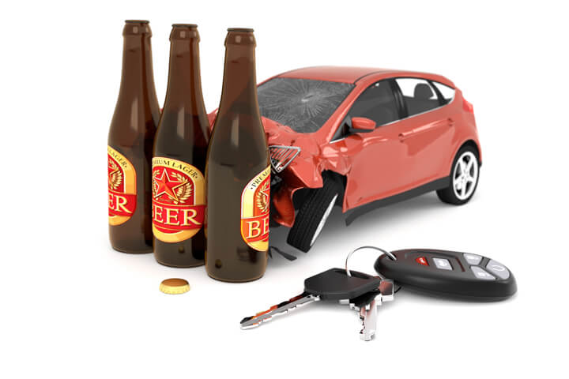

Road Crashes in Victoria - Drug & Alcohol Factors

Key Headlines
In the metro areas of Victoria, the higher the IRSD, generally number of alcohol related crashes, decreases. There were some interesting outliers, being Geelong, Casey and Melbourne. These three LGA's are some of the largest in the state, or like Melbourne, high traffic flow.
When reflected by the number who are receiving treatment for drug or alcohol conditions, the statistics reveal there isn't a strong correlation, but there are outliers that could benefit from localised Government programs.